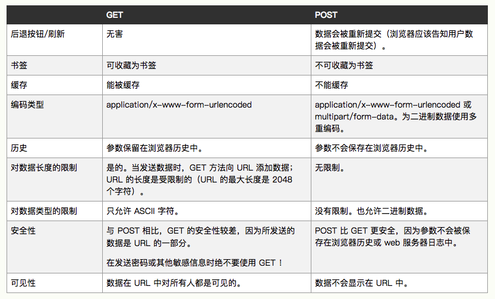

面试题链接
iOS面试题集合(BAT及各大中小型公司)
如何面试 iOS 工程师？
iOS面试题集锦
题目及答案
http的post和get啥区别

使用atomic一定是线程安全的吗
load和initialize的区别
简单的说。load方法只要在类被引入的时候，就会调用。而initialize方法是在类的第一个方法调用之前会被调用。initialize更类似于类的懒加载方法。
更多：
+ (void)load;调用的顺序是：父类——子类——分类
如果存在两个类Father和Son，Son继承Father，分别重写了他们的load方法，又分别存在两个类的分类，在分类中也重写load方法。那么当引入这两个类后，就会进入load方法，进入的顺序是：Father load——Son load——分类 load（哪个分类的load先执行不清楚）+ (void)initialize;首先先声明先使用父类，后使用子类。调用的顺序是（分类中无该方法）：父类——子类。（分类中有该方法）：父类分类——子类分类
同时，initialize有一点需要注意：如果子类和父类都写了initialize方法，却只使用了子类，会先调用父类的，在调用子类的。如果只写了父类的initialize方法，却只使用了子类， 会先调用父类的，在调用父类的。（父类的回调两次！）
imageNamed和imageWithContentsOfFile的区别
使用imageNamed这个方法生成的UIImage对象，会在应用的bundle中寻找图片，如果找到则Cache到系统缓存中。下一次使用系统会自动从缓存中获取。
适用于图片小，且使用频率较多。使用imageWithContentsOfFile的方式加载的图片，图片会被系统以数据的方式进行加载。返回的对象不会保存在缓存中，一旦对象销毁就会释放内存。
适用于图片大，且只使用一次。
applicationWillEnterForeground和applicationDidBecomeActive调用场景
applicationWillEnterForeground：
1.点击App图标，使App从后台恢复至前台。
2.点击通知中心里面的远程推送，使App从后台进入前台
3.切至其他app后切回来时。applicationDidBecomeActive：
1.点击桌面图标正常启动App或者杀死进程后点击推送消息启动App
2.上滑关闭通知界面
3.点击App图标，使App从后台恢复至前台
4.点击通知中心里面的远程推送，使App从后台进入前台
5.切至其他app后切回来时。